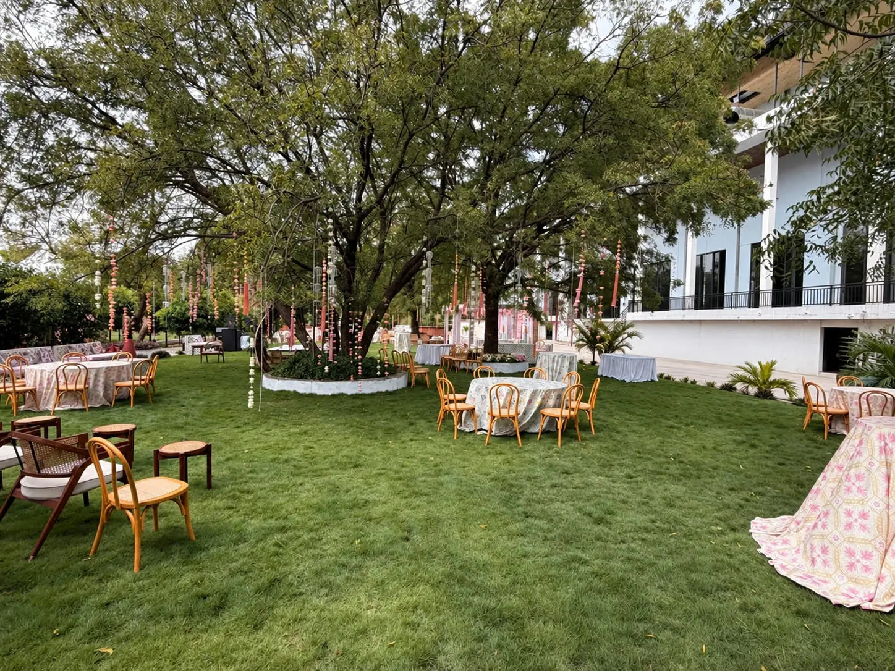
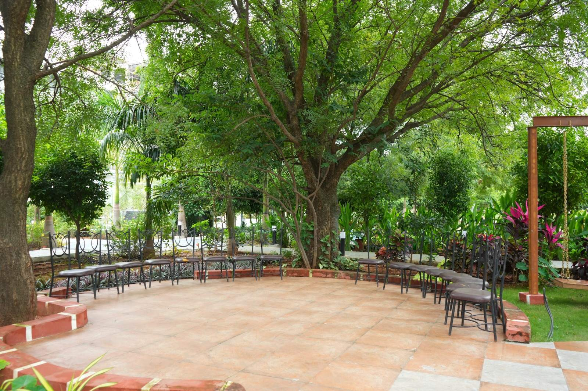
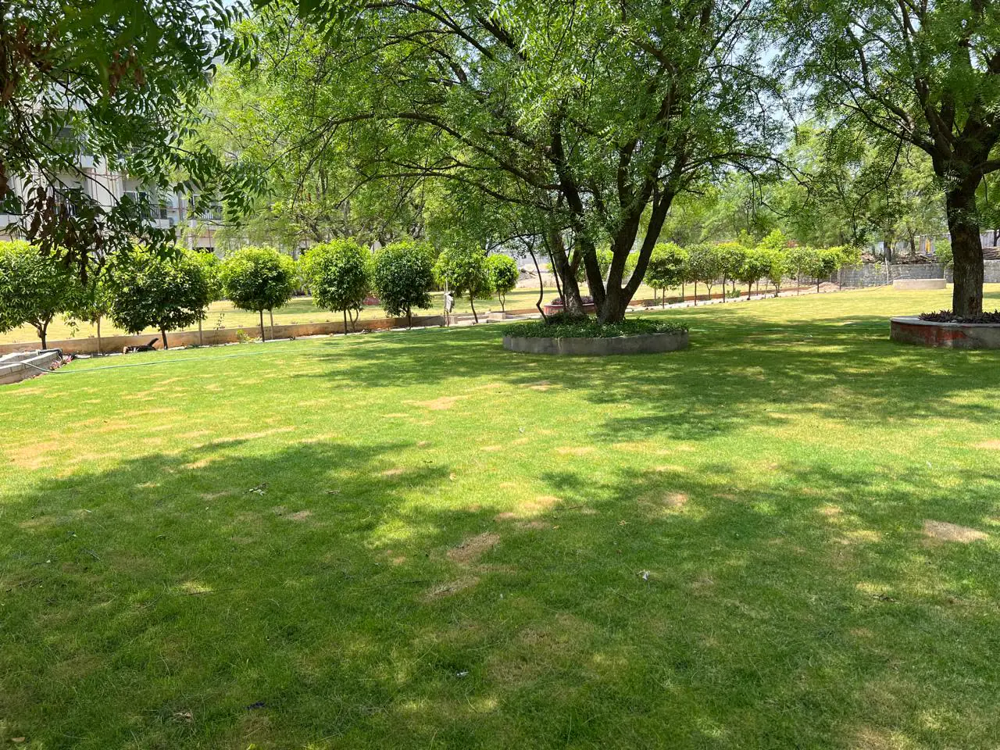

Vanabhojanam in the gardens at Firefox.
Firefox Sports & Resorts is hosting Vanabhojanam from 10 November to 8 December 2026, through Karthika masam. Bring your family, community or team for a traditional Andhra meal under the trees, on a 15-acre garden estate at Moinabad, about 20 km from Hyderabad.

A Vanabhojanam is a meal together under the trees, the way families across Telangana and Andhra Pradesh mark the month of Karthikam. Few groups have a garden large enough for everyone to sit down together. Firefox has fifteen acres of lawns, shade trees and garden paths, and this season they are ready for yours.
What the day includes
- Traditional Andhra cuisine.
- Open green spaces, with room for a large group to spread out.
- Team bonding and fun activities.
- Music and entertainment.
- Photo moments in the gardens.
The menu and the rates can be shaped around your group, and group bookings have special pricing. Tell the desk what your group would like and the size of it, and the package is put together from there.
Where you sit
The meal is laid out in the gardens, not a hall. Among the spaces on the estate:
- Lawns under big, old shade trees, with room for long tables or rows of chairs.
- A tiled seating circle with benches under a great shade tree.
- Garden paths, wooden swings and shaded seats, for the children and for a walk after lunch.
Because it is one estate, a large group stays together in one place for the whole day. See the estate.

Who it suits
- Families bringing several households together for the month’s meal.
- Communities and associations, such as a residents’ association, who want one outing for all their members.
- Office teams looking for a day out together. Corporate day outings are a large part of what Firefox does. Corporate at Firefox.
Make a day of it
The meal is the centre of the day, but there is plenty around it. Walk the gardens after lunch. For those who want to play, there are eight sports under one roof: badminton, table tennis, tennis, pickleball, basketball, football and cricket on turf, and volleyball on sand, with the courts open from 6 am to 9 pm. Ask about courts when you enquire. Day outings at Firefox.
If some of the group would rather stay the night, there are 110 rooms on the estate. The hotel.

Planning your Vanabhojanam
- Your date. The season runs four weeks, from 10 November to 8 December. Have a first and a second choice of date when you call.
- Your numbers. An approximate headcount, and roughly how many children and elders, so the seating and the meal can be planned around them.
- Your menu. Say what your group eats and anything it avoids. The menu can be customised.
- Getting here. About 20 km from Hyderabad and around 30 minutes from HITEC City, with parking for 500. Directions on Google Maps.
- See it first. Site visits are offered: come and walk the gardens before you book, and choose where your group will sit.
How to book
Call +91 80191 60145 or +91 96767 16888, or send an enquiry with your preferred date, the size of your group and its name. The desk confirms the date, the menu and the rate for your group.